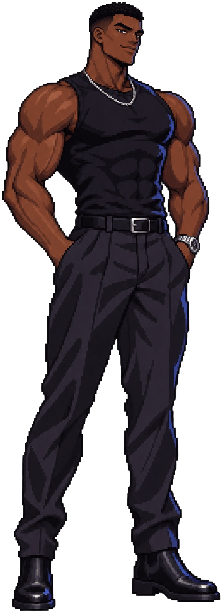

Lost Underground
Sylvia is lost in the ruins and dungeons below ground, in old cellars and underground bars. Her boyfriend Ray is wandering the bar with her. Walk around the bar with her and find the way out and up.


How to play
Move Sylvia with A and D or the arrow keys to walk left and right, and W and S to walk her forward and back on the floor. She turns away from you walking forward, and faces you walking back. You start in your chamber. Walk all the way to the right to go to the bar. Walk up to Vicky behind the bar and press T to talk. Press H to attack, Ray will run over and fight with you. Ray follows you when you get far away and wanders the bar when you are close. Walk all the way to the left edge of the bar and press E to enter your chamber. You walk in from the right side. In the chamber, walk all the way to the right again to go back to the bar. Walk up to the bed in the chamber and press E to sleep under the covers and recover HP. Ray climbs in with you. In the chamber, walk up to the big canal window on the right wall and press E to climb out to the Shopping District. In the Shopping District, walk all the way to the left to climb back in the window. Walk up to the bar door with the beer mug and press E to go to the bar. Walk up to the repairs, clothing, Style Studio and arcade doors and press E to go inside. Walk all the way to the left inside a shop to come back out to the street. Walk up to Char, Mikey or Gunner in their shops and press T to talk to them. They stop, show their talking pose and say something. Press T again for another line, or walk away or press Esc to end the chat. Walk all the way to the right edge of the bar and press E to go up to the Forgotten subway. Walk all the way to the right edge of the subway and press E to go up the stairs to the garden. In the garden, walk all the way to the left to come back down to the subway. On touch, hold the left or right side of the bar to walk that way.
Meet Sylvia and Ray
Sylvia is the main character. Ray is a head taller than her and just wanders the bar while she finds the way out.
The bar
The bar under the ground, where Vicky pours drinks. The stairs on the right lead up to the Forgotten subway. Their chamber is through the far left edge.
The Forgotten subway
An abandoned station up the stairs from the bar, with a rusty old train. The stairs on the right climb up to the garden.
The Garden
A lush underground garden above the subway, with waterfalls, a pond and a stone bridge. The stairs on the right climb higher, toward the way out.
The Shopping District
A neon canal street under the ground, with a repairs shop, a clothing store, a style studio and an arcade. Climb out of the chamber window to get there. The bar door with the beer mug leads to the bar.
The shops
The repair shop, the clothing store, the Style Studio salon and the arcade all open off the Shopping District street. Walk up to a door and press E to go in, and walk all the way to the left inside to come back out.
Char, the clothing store owner
Char runs the clothing store and only ever stands and walks in there. She wanders the racks, pausing to look at the clothes. A fashion diva with a fur coat and a cigar. Walk up to her and press T to talk.
Mikey, the salon owner
Mikey runs the Style Studio salon and only ever stands and walks in there. He wanders the chairs, pausing by the mirrors. Fun, loud and obsessed with hair. Walk up to him and press T to talk.
Gunner, the repair shop owner
Gunner runs the repair shop and only ever stands and walks in there. He wanders the workbench, pausing by the tools. Warm and handy, he keeps the whole district running. Walk up to him and press T to talk.
Beat your best
Your best score for Lost Underground is saved in this browser.